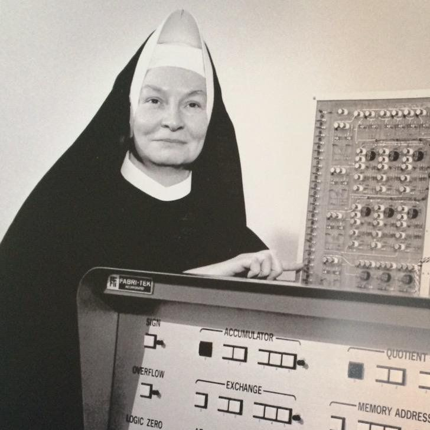
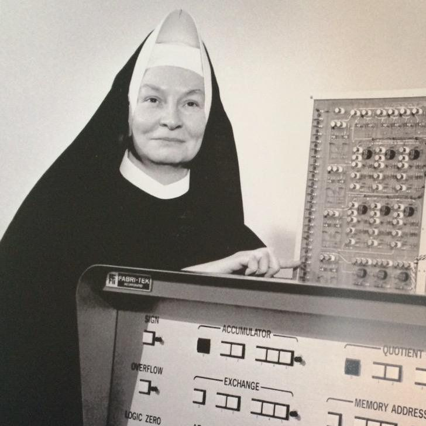

A primeira mulher a receber um doutorado em Ciências da Computação, Keller recebeu seu diploma pela Whashington University, em 1965. Sua princilpal contribuição para a área computacional baseia-se na participação da criação da linguagem de programação BASIC, criada com fins educacionais e didáticos, utilizada por décadas, até ser substituída pelo Pascal. Keller enxergou desde cedo o potencial dos computadores como uma ferramenta educacional e voltada para o desenvolvimento humano, seja por meio de um maior acesso à informação ou simplesmente como suporte na sala de aula. Mary Kenneth Keller escreveu quatro livros sobre computação e programação, e as obras são, até hoje, tidas como uma referência. Até falecer aos 71 anos em 1985, Keller atuava também como militante pela inclusão de mulheres no mundo da informática, ajudando a fundar uma associação infantil para o uso de computadores na educação. Hoje, batiza o Centro de Ciências da Computação da universidade onde atuou por 20 anos, além de ter uma bolsa de estudos na área que também leva o seu nome.